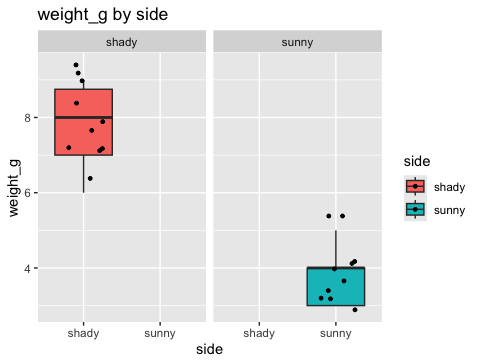
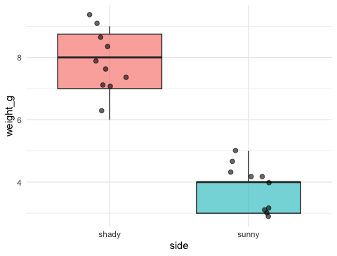
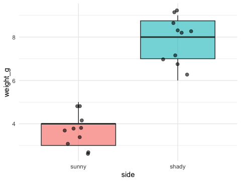
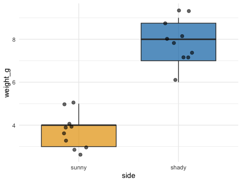
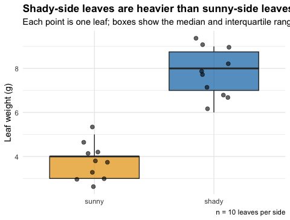
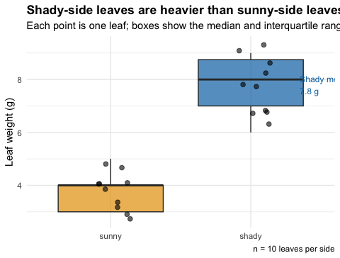

From a plot that shows everything to a figure that says one thing
2026-08-27
geom_boxplot(), geom_point(), position_jitter()facet_wrap(), stat_summary(), geom_smooth(), patchwork, log scalesNote
✅ Key idea from Advanced Plotting
You now have the mechanics. Today is different: no new geoms. Today is about choosing which mechanics to use, and which to leave out, so your one figure makes one point.
The problem this lecture solves:
What we’ll practice:
annotate() to point at the one thing that mattersTip
🖐 Try it yourself
By the end you will redesign a technically-correct-but-confusing plot into one that a stranger understands in five seconds.
Our tools today: mostly tools you already know, used differently.
References:
Naming conventions:
_plot_plot_v2Two chunks today. After each, switch to the activity and redesign a plot yourself.
Note
✅ Why this lecture matters
Every remaining lecture in this course ends with a plot. This is the only lecture that tells you how to judge whether that plot is any good — a skill no geom teaches by itself.
We will cover: starting from the question, and the “five-second test.”
Tip
🖐 After this chunk: Activity Parts 1–3.
Before you write one line of ggplot(), answer this in a full sentence:
“This figure shows that ____.”
If you cannot finish that sentence, you are not ready to plot yet — you are still exploring. Exploring is fine, but exploratory plots and the final figure are not the same plot.
Our sentence today:
“Leaves on the shady side of the tree are heavier than leaves on the sunny side.”
Note
✅ Key idea
A dozen exploratory plots is normal and good. Your final talk gets one. Decide which one earns that slot by asking whether it finishes the sentence above.
Show your plot to a labmate for five seconds, then hide it. Ask: “What did that plot say?”
Tip
This is the same test we asked you to plan for in the final-project worksheet: “Slide 3 — the ONE figure that shows your result.” Today is where you learn to build that slide.
Note
🔮 Predict first: Before you look at the code, predict what will be wrong with this plot even though every line of code is correct.
# Technically correct — but a poor final figure ---------
tree_busy_plot <- tree_df %>%
ggplot(aes(x = side, y = weight_g, fill = side)) +
geom_boxplot() +
geom_jitter(width = 0.3, size = 1) +
facet_wrap(~ side) +
labs(title = "weight_g by side", x = "side", y = "weight_g") +
theme_gray()
tree_busy_plot
Warning
⚠️ What’s wrong here
We will cover: cutting redundancy, direct labeling, deliberate ordering and color, and a finding-based title.
Tip
🖐 After this chunk: Activity Parts 4–7.
Note
✅ Key idea
If two elements of your plot show the same information twice (facet + x-axis, legend + x-axis, title + axis label), delete one. Redundancy is not clarity — it’s clutter that looks like effort.
Note
🔮 Predict first: Our x-axis already says “sunny” and “shady.” Do we need the fill = side legend at all?

# fct_relevel() puts categories in a meaningful order ---
tree_plot_v4 <- tree_df %>%
mutate(side = fct_relevel(side, "sunny", "shady")) %>%
ggplot(aes(x = side, y = weight_g, fill = side)) +
geom_boxplot(alpha = 0.6, outlier.shape = NA) +
geom_jitter(width = 0.15, alpha = 0.6, size = 2) +
theme_minimal() +
theme(legend.position = "none")
tree_plot_v4
shady before sunny) is an accident of spelling, not a decisionfct_relevel() lets you choose the order that matches your story: baseline first, then the comparison# Choose two colors deliberately, not ggplot's defaults -
tree_plot_v5 <- tree_df %>%
mutate(side = fct_relevel(side, "sunny", "shady")) %>%
ggplot(aes(x = side, y = weight_g, fill = side)) +
geom_boxplot(alpha = 0.7, outlier.shape = NA) +
geom_jitter(width = 0.15, alpha = 0.6, size = 2) +
scale_fill_manual(values = c(sunny = "#E69F00", shady = "#0072B2")) +
theme_minimal() +
theme(legend.position = "none")
tree_plot_v5
Warning
⚠️ Watch out!
Red/green combinations are unreadable to ~8% of men with red-green color blindness. #E69F00 (orange) and #0072B2 (blue) are from the Okabe-Ito palette, designed to stay distinguishable for colorblind readers.
Tip
Colour should encode the group your reader most needs to compare — not just “make it look nice.”
Note
🔮 Predict first: Compare "weight_g by side" to "Shady leaves are heavier than sunny leaves". Which one lets someone understand the plot without ever looking at the axes?
# The title states the finding; labs() explains the rest
tree_final_plot <- tree_df %>%
mutate(side = fct_relevel(side, "sunny", "shady")) %>%
ggplot(aes(x = side, y = weight_g, fill = side)) +
geom_boxplot(alpha = 0.7, outlier.shape = NA) +
geom_jitter(width = 0.15, alpha = 0.6, size = 2) +
scale_fill_manual(values = c(sunny = "#E69F00", shady = "#0072B2")) +
labs(
title = "Shady-side leaves are heavier than sunny-side leaves",
subtitle = "Each point is one leaf; boxes show the median and interquartile range",
x = NULL,
y = "Leaf weight (g)",
caption = "n = 10 leaves per side"
) +
theme_minimal() +
theme(legend.position = "none", plot.title = element_text(face = "bold"))
tree_final_plot
x = NULL — when categories are self-explanatory, drop a redundant axis labelannotate() to Point at the One Thing# annotate() draws a fixed element, not tied to the data
mean_shady <- tree_df %>% filter(side == "shady") %>%
summarize(m = mean(weight_g, na.rm = TRUE)) %>% pull(m)
tree_final_plot +
annotate(
"text", x = 2.35, y = mean_shady,
label = paste0("Shady mean:\n", round(mean_shady, 1), " g"),
size = 3.2, color = "#0072B2", hjust = 0
)
annotate() places a single fixed label — it does not come from a geom_*() mapped to dataTake the “busy” plot all the way through every fix, and redesign a second plot on your own using height_cm or width_cm.
fct_relevel()), not alphabeticallyannotate() to point at exactly one number or region that mattersReferences:
Up next: